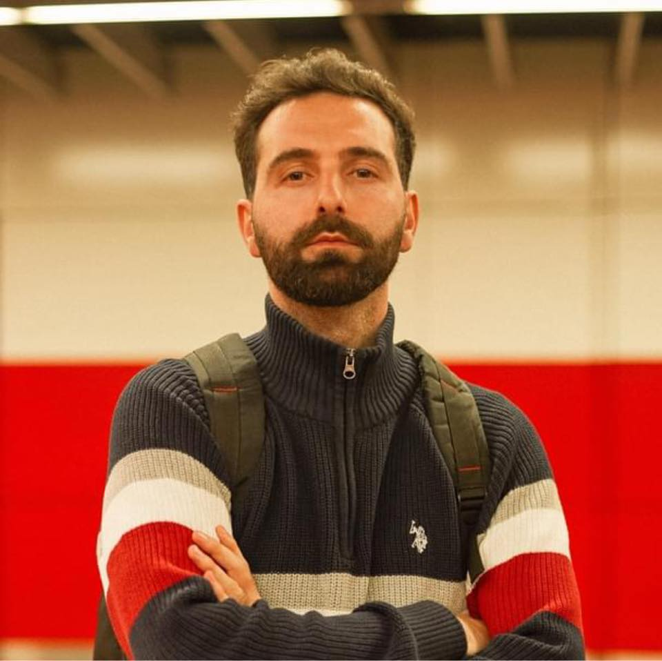

Kremtim Selimi

Summary
I am a versatile professional with a diverse skill set and a passion for creativity. With a background in mass communication & journalism, I have a keen eye for storytelling and visual communication. My experience as a portrait photographer has honed my ability to capture moments and convey emotions through imagery. Transitioning into front-end development, I have embraced the challenge of blending design and functionality to create engaging web experiences. I am dedicated to continuously expanding my knowledge and skills in order to excel in this dynamic field and contribute meaningfully to projects that inspire and innovate.
Education
- Bachelor of Mass Communication and Journalism - Kolegji AAb (2011-2014)
Work Experience
- Photographer
2012 - 2022
- Proficient in various aspects of photography, including composition, lighting, and post-processing techniques.
- Effective communication with clients to understand their vision and preferences for portrait sessions.
- Provided creative direction to clients regarding poses, wardrobe choices, and locations to achieve desired aesthetic.
- Orchestrated photoshoot logistics, including scheduling, location scouting, and equipment setup, to ensure smooth sessions.
- Edited and retouched photographs using software like Adobe Photoshop or Lightroom to enhance visual appeal.
Skills
- Photography Skills: ⭐️⭐️⭐️⭐️⭐️
- Portrait Photography: ⭐️⭐️⭐️⭐️⭐️
- Lighting Techniques: ⭐️⭐️⭐️⭐️⭐️
- Composition: ⭐️⭐️⭐️⭐️⭐️
- Post-Processing (e.g., Adobe Photoshop, Capture One): ⭐️⭐️⭐️⭐️⭐️
- Client Communication: ⭐️⭐️⭐️⭐️⭐️
- Creative Direction: ⭐️⭐️⭐️⭐️⭐️
Other